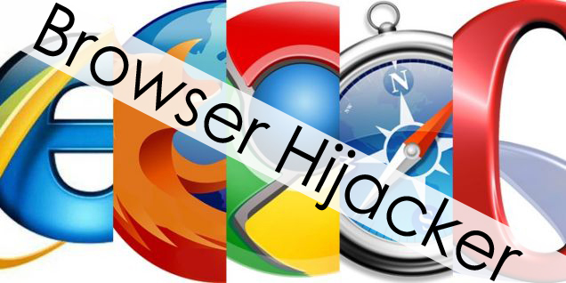

Come rimuovere adeguatamente un Hijacker

Istruzioni per la rimozione manuale di Myway hijacker
Usare il pannello di controllo per rimuovere i componenti e gli installer principali di Myway hijacker:
- Andare al pannello di controllo. Su Windows XP/Vista/7 Start -> Pannello di Controllo. Poi Programmi da Aggiungere/Rimuovere. Su Windows 8. Digitare Pannello di Controllo nel riquadro di ricerca. In entrambi i casi potrebbe essere necessario confermare che si è l‘amministratore del PC.
- In automatico, raccomando di rimuovere Yontoo, WebCake, qualsiasi cosa relativa a “sconti“ o “coupon“. Scansionare con programmi Anti-Malware come Spyhunter o Stopzilla potrebbe dare un‘idea di quali altri programmi è necessario rimuovere.
- Chiudere il Pannello di Controllo.
Rimuovere Myway hijacker da Internet Explorer:
- Cliccare sull’Icona a forma di chiave inglese -> Gestione Aggiunte.
- Andare a Barre degli Strumenti ed Estensioni. Rimuovere quelle sconosciute E che non sono state create da Google, Microsoft, Yahoo, Oracle o Adobe.
- Chiudere Le Opzioni.
Rimuovere Myway hijacker da Firefox:
- Digirare about:addons nel campo degli URL.
- Andare alla Lista delle Estensioni e Aggiunte, rimuovere tutto ciò che non si riconosce. Se non si conosce qualche estensione e non è stata creata da Mozilla, Google, Microsoft, Oracle o Adobe, è molto probabile che non sia necessaria.
- A scelta, Resettare Firefox.
- Andare a Firefox -> Aiuto (Aiuto nel menu per gli utenti OSX) -> Informazioni Troubleshooting -> poi Resetta Firefox.
Rimuovere Myway hijacker da Chrome:
- Digitare chrome://extensions nel campo degli url.
- Andare alla lista delle estensioni e rimuovere i programmi inutili. Se non si è sicuri, è possibile disabilitarli temporaneamente.
- Riavviare Chrome.
- Opzionale, è possibile andare a chrome://settings, cliccare su Impostazioni avanzate, scorrere fino alla fine della lista e cliccare su Resetta impostazioni browser.
Home